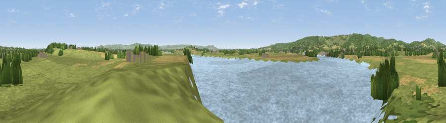

Viewpoint near Westbury-on-Severn
#16972 in England · top 36% of its area beats it · near Westbury-on-SevernWhere it is
The exact computed spot (SO 71625 13175). Click the marker for map links.
The view, rendered

A 360° render of this exact spot computed from the terrain model, tree cover and land cover — summer colours, afternoon light, calibrated against photographs of famous viewpoints. Real trees, hedges and buildings will differ in detail.
The panorama
Grey silhouette: terrain skyline in each direction (720 bearings, Earth curvature and refraction included). Dashed green: skyline with trees (+15 m) and buildings (+8 m) as obstacles. Blue strip: how far the ground is visible on each bearing.
Where the view opens
Wedge length = distance to the farthest visible ground on that bearing (vegetation-aware). Rings at 10, 25 and 50 km.
What fills the view
53% water · 29% grassland · 10% woodland · 8% cropland ·
Angular shares of the visible panorama (visual magnitude), not map area. Landscape diversity 0.50 (0–1 Shannon).
Key numbers
More beautiful places nearby
The staircase of upgrades: each row has a higher view potential than everything closer. Driving times are estimates from straight-line distance, calibrated against real road routing — check an actual route before setting out.
| Place | Direction | Drive | Score |
|---|---|---|---|
| Barrow Hill | SSE · 3 km | ~8 min | 65.7 |
| Viewpoint near Littledean | W · 4 km | ~9 min | 73.8 |
| Viewpoint near Huntley | N · 6 km | ~12 min | 75.0 |
| Viewpoint near May Hill | NNW · 8 km | ~17 min | 76.1 |
| Viewpoint near Whaddon | E · 13 km | ~23 min | 77.7 |
| Viewpoint near Brookthorpe | E · 14 km | ~25 min | 78.0 |
| Viewpoint near Stinchcombe | S · 15 km | ~26 min | 79.4 |
| Painswick Beacon | E · 15 km | ~27 min | 79.6 |
51.81648, -2.41304 · source: screening · position refined by local search. Computed location — check access rights before visiting.